|
Kun Yuan (袁坤)
R&D Expert in Artificial Intelligence and Computer Vision
Video Technology Group, Kuaishou Technology
Research Interests: Visual Content Generation, Video Quality Assessment, Video Enhancement and Restoration, AI Infrastructure
Email: yuankunbupt dot gmail dot com
[Google Scholar]
[Linkedin]
|
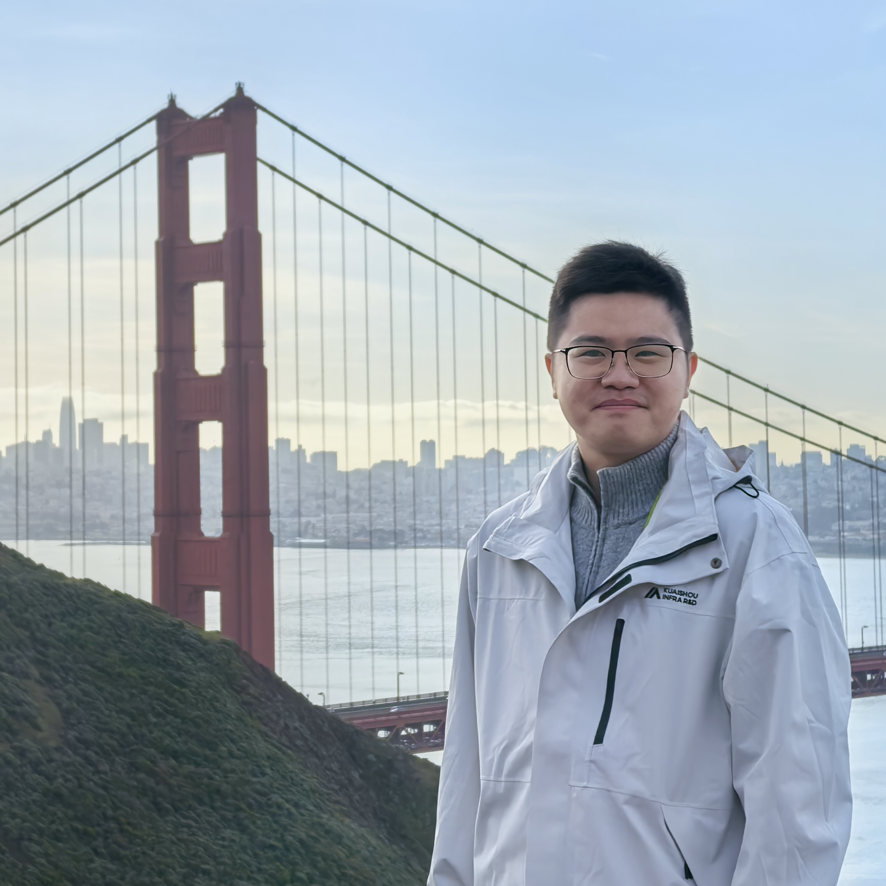
|
Short Bio
I am currently a Research & Development Expert at Kuaishou Technology since 2021.
I am committed to analyzing and improving the quality of Kuaishou videos and enhancing users' experience in live and on-demand scenarios.
Before joining Kuaishou, I worked in SenseTime Research as a Computer Vision and Machine Learning Researcher from 2018 to 2021,
improving the accuracy of face recognition and classification in smart city scenarios.
I received my master degree from the National Laboratory of Pattern Recognition (NLPR), Institute of Automation, Chinese Academy of Science in 2018,
and my bachelor degree from the Beijing University of Posts and Telecommunications (BUPT) in 2015.
My research interests are in visual content generation, video quality assessment, video enhancement and restoration, neural architecture design and AI infrastructure.
News
-
[2025-03] I give a talk at Nvidia GTC 2025 about "Redefining Visual Experience of Short-form Videos: Accelerating Large Models for Intelligent Video Quality Assessment and Processing by TensorRT-LLM".
-
[2025-03] One paper accepted by CVPR 2025.
-
[2024-07] Two papers accepted by ACM MM 2024.
-
[2024-07] One paper accepted by ECCV 2024.
-
[2024-03] Two papers accepted by CVPR 2024.
-
[2023-10] Two papers accepted by ACM MM 2023.
-
[2023-03] One paper accepted by CVPR 2023.
-
[2022-03] One paper accepted by CVPR 2022.
-
[2021-02] One paper accepted by ICLR 2021.
-
[2021-02] Two papers accepted by ICCV 2021.
-
[2020-08] One paper accepted by ECCV 2020.
-
[2018-07] One paper accepted by IJCAI 2018.
Publications
(* denotes equal contribution, # denotes corresponding author)
2024
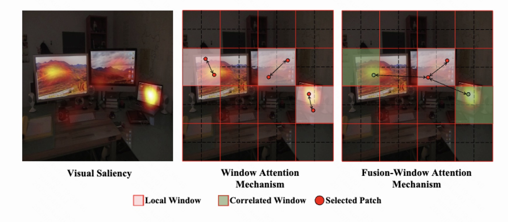
KVQ: Boosting Video Quality Assessment via Saliency-guided Local Perception
Yunpeng Qu,
Kun Yuan#, Qizhi Xie, Ming Sun, Chao Zhou, Jian Wang
IEEE/CVF Conference on Computer Vision and Pattern Recognition (CVPR), 2025.
[
Paper][
Project Page]
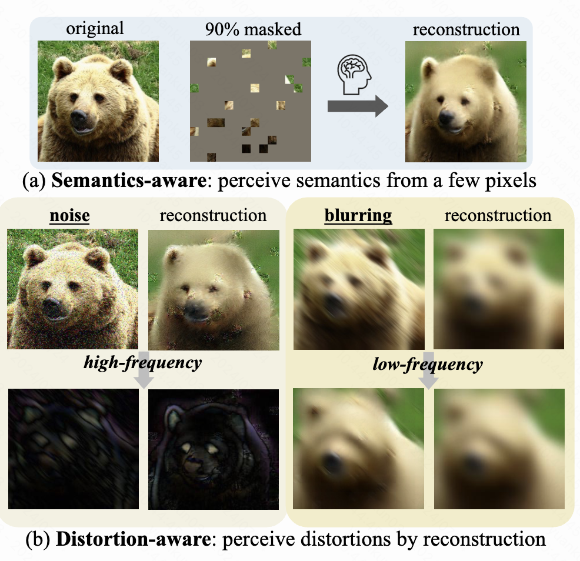
QPT V2: Masked Image Modeling Advances Visual Scoring
Qizhi Xie,
Kun Yuan#, Yunpeng Qu, Mingda Wu, Ming Sun, Chao Zhou, Jihong Zhu
ACM International Conference on Multimedia (ACM MM), 2024.
[
Paper][
Project Page]
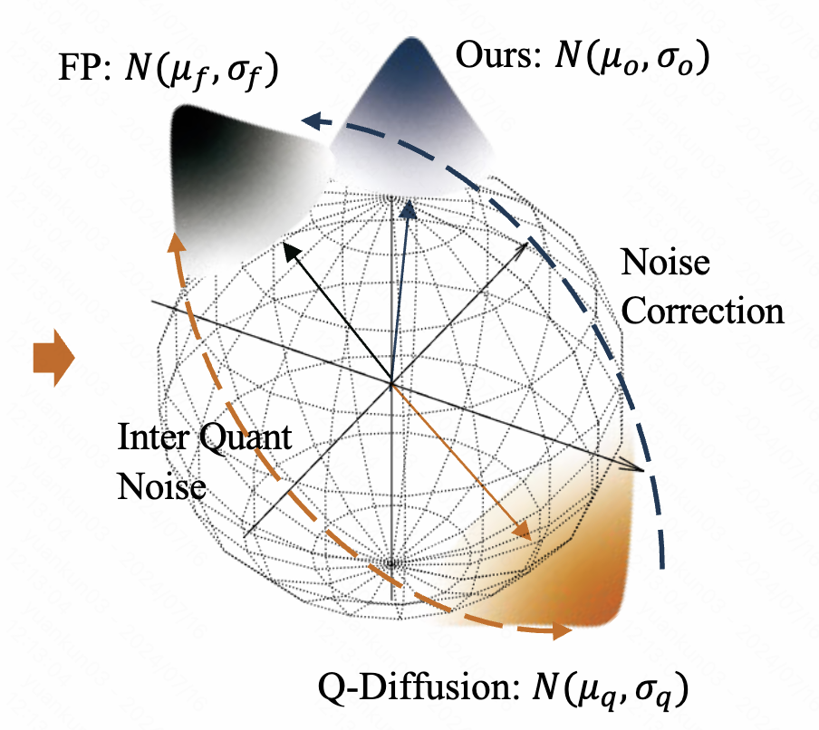
QNCD: Quantization Noise Correction for Diffusion Models
Huanpeng Chu, Wei Wu, Chengjie Zang,
Kun Yuan
ACM International Conference on Multimedia (ACM MM), 2024.
[
Paper][
Project Page]
XPSR: Cross-modal Priors for Diffusion-based Image Super-Resolution
Yunpeng Qu*,
Kun Yuan*, Kai Zhao, Qizhi Xie, Jinhua Hao, Ming Sun, Chao Zhou
European Conference on Computer Vision (ECCV), 2024.
[
Paper][
Project Page]
KVQ: Kwai Video Quality Assessment for Short-form Videos
Yiting Lu*, Xin Li*, Yajing Pei*,
Kun Yuan#, Qizhi Xie, Yunpeng Qu, Ming Sun, Chao Zhou, Zhibo Chen#
IEEE/CVF Conference on Computer Vision and Pattern Recognition (CVPR), 2024.
[
Paper]
[
Supp]
[
Project Page]
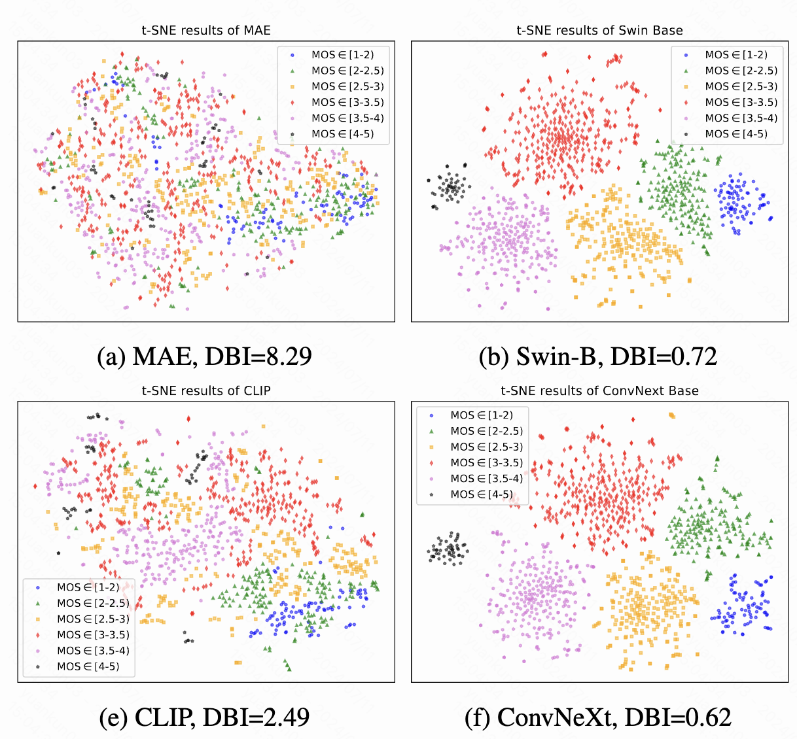
PTM-VQA: Efficient Video Quality Assessment Leveraging Diverse PreTrained Models from the Wild
Kun Yuan*, Hongbo Liu*, Mading Li*, Muyi Sun, Ming Sun, Jiachao Gong, Jinhua Hao, Chao Zhou, Yansong Tang
IEEE/CVF Conference on Computer Vision and Pattern Recognition (CVPR), 2024.
[
Paper]
2023
Capturing Co-existing Distortions in User-Generated Content for No-reference Video Quality Assessment
Kun Yuan*, Zishang Kong*, Chuanchuan Zheng, Ming Sun, Xing Wen
ACM International Conference on Multimedia (ACM MM), 2023.
[
Paper]
Ada-DQA: Adaptive Diverse Quality-aware Feature Acquisition for Video Quality Assessment
Hongbo Liu*, Mingda Wu*,
Kun Yuan*, Ming Sun, Yansong Tang, Chuanchuan Zheng, Xing Wen, Xiu Li
ACM International Conference on Multimedia (ACM MM), 2023.
[
Paper]
Quality-aware Pre-trained Models for Blind Image Quality Assessment
Kai Zhao*,
Kun Yuan*, Ming Sun, Mading Li, Xing Wen
IEEE/CVF Conference on Computer Vision and Pattern Recognition (CVPR), 2023.
[
Paper]
2022
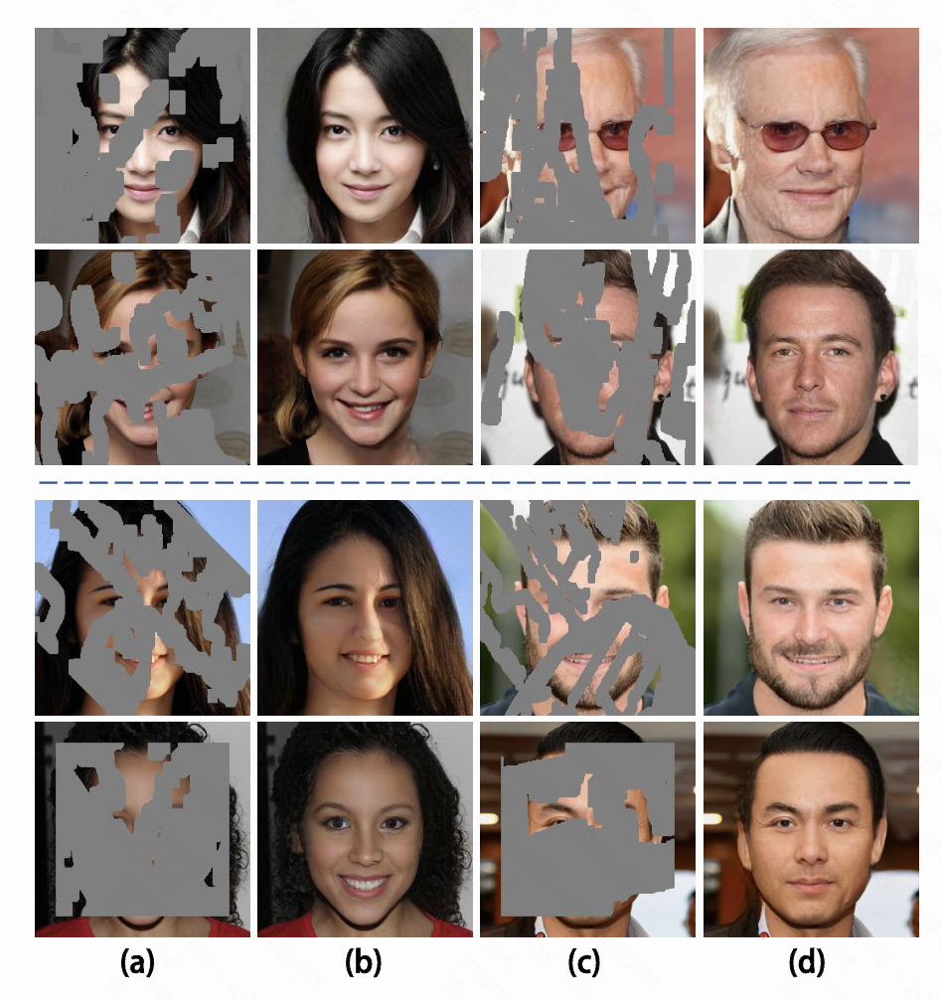
ShowFace: Coordinated Face Inpainting with Memory-Disentangled Refinement Networks
Zhuojie Wu, Xingqun Qi, Zijian Wang, Wanting Zhou,
Kun Yuan, Muyi Sun, Zhenan Sun
British Machine Vision Conference (BMVC), 2022.
[
Paper]
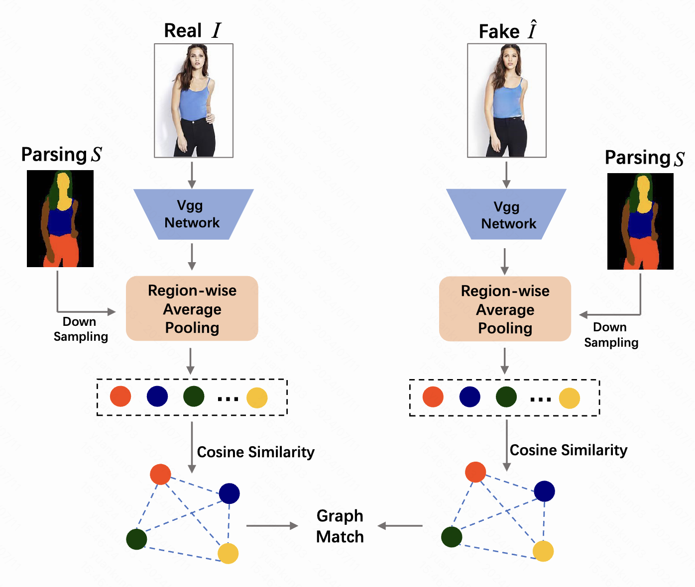
Self-supervised Correlation Mining Network for Person Image Generation
Zijian Wang, Xingqun Qi,
Kun Yuan, Muyi Sun
IEEE/CVF Conference on Computer Vision and Pattern Recognition (CVPR), 2022.
[
Paper]
2021
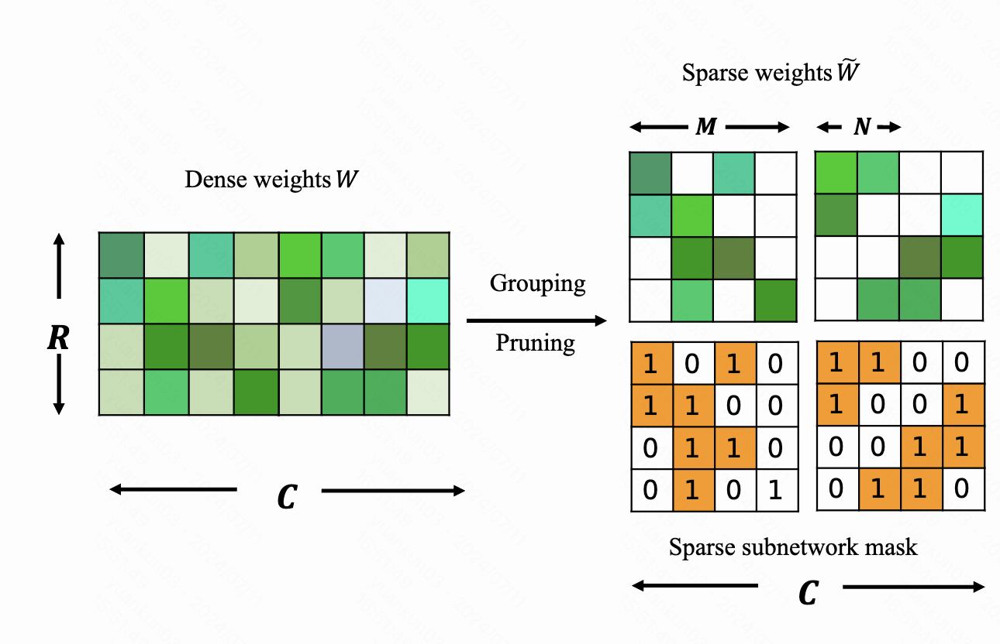
Learning N:M Fine-grained Structured Sparse Neural Networks from Scratch
Aojun Zhou, Yukun Ma, Junnan Zhu, Jianbo Liu, Zhijie Zhang,
Kun Yuan, Wenxiu Sun, Hongsheng Li
International Conference on Learning Representations (ICLR), 2021.
[
Paper]
[
Project Page]
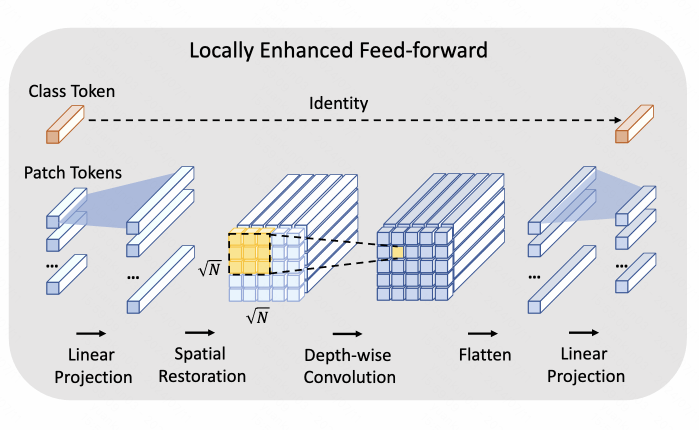
Incorporating Convolution Designs into Visual Transformers
Kun Yuan, Shaopeng Guo, Ziwei Liu, Aojun Zhou, Fengwei Yu, Wei Wu
IEEE/CVF International Conference on Computer Vision (ICCV), 2021.
[
Paper]
[
Project Page]
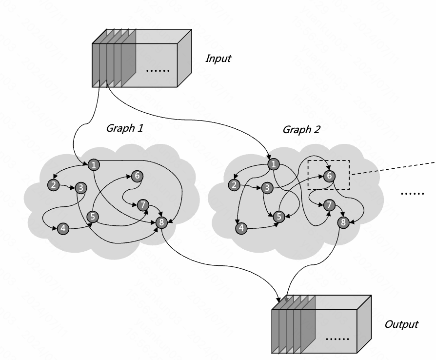
Differentiable Dynamic Wirings for Neural Networks
Kun Yuan, Quanquan Li, Shaopeng Guo, Dapeng Chen, Aojun Zhou, Fengwei Yu, Ziwei Liu
IEEE/CVF International Conference on Computer Vision (ICCV), 2021.
[
Paper]
Earlier
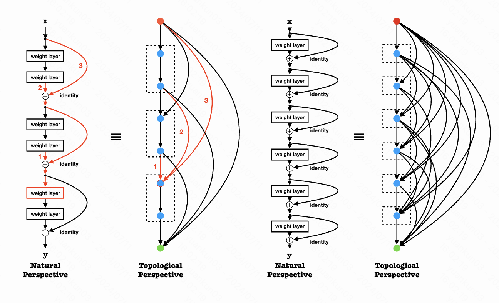
Learning Connectivity of Neural Networks from a Topological Perspective
Kun Yuan, Quanquan Li, Jing Shao, Junjie Yan
European Conference on Computer Vision (ECCV), 2020.
[
Paper]
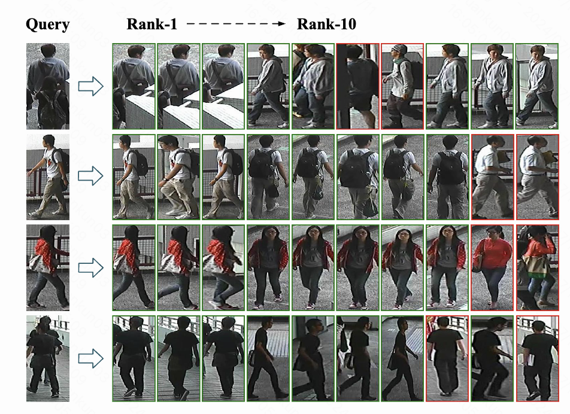
SafeNet: Scale-normalization and Anchor-based Feature Extraction Network for Person Re-identification
Kun Yuan, Qian Zhang, Chang Huang, Shiming Xiang, Chunhong Pan
International Joint Conferences on Artificial Intelligence (IJCAI), 2018.
[
Paper]
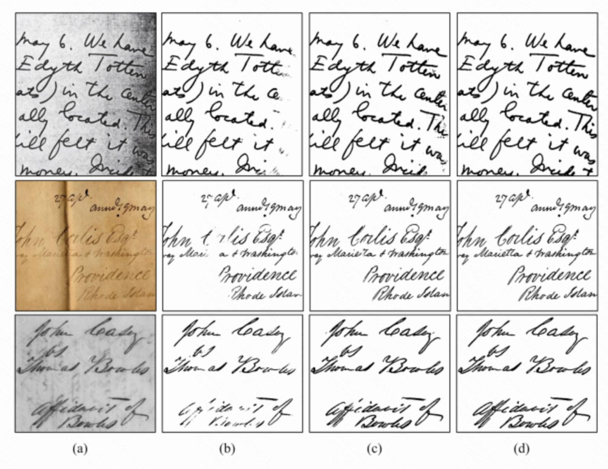
Deep Networks for Degraded Document Image Binarization through Pyramid Reconstruction
Gaofeng Meng,
Kun Yuan, Ying Wu, Shiming Xiang, Chunhong Pan
International Conference on Document Analysis and Recognition (ICDAR), 2017.
[
Paper]
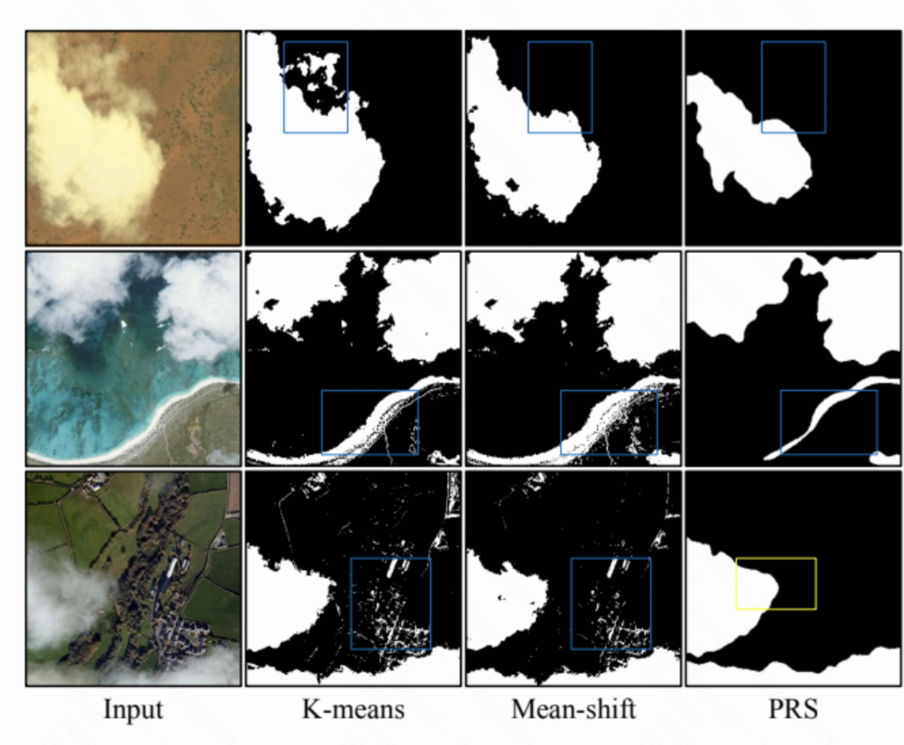
Efficient Cloud Detection in Remote Sensing Images using Edge-aware Segmentation Network and Easy-to-hard Training Strategy
Kun Yuan, Gaofeng Meng, Dongcai Cheng, Jun Bai, Shiming Xiang, Chunhong Pan
IEEE International Conference on Image Processing (ICIP), 2017.
[
Paper]
Workshops
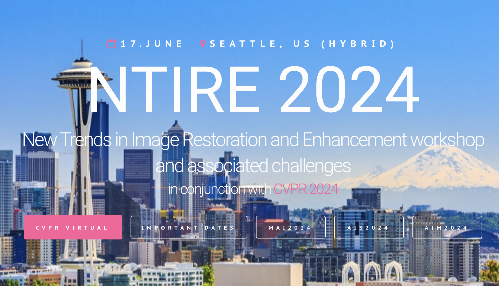
NTIRE 2024 Challenge on Short-form UGC Video Quality Assessment: Methods and Results
Xin Li,
Kun Yuan, Yajing Pei, Yiting Lu, Ming Sun, Chao Zhou, Zhibo Chen, Radu Timofte
IEEE/CVF Conference on Computer Vision and Pattern Recognition Workshop (CVPRW), 2024.
[
Paper]
[
Project Page]
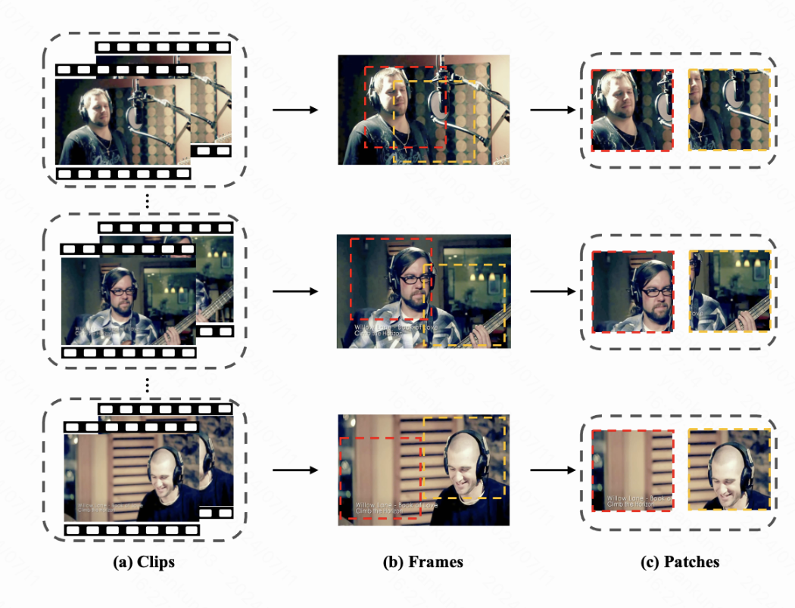
Zoom-VQA: Patches, Frames and Clips Integration for Video Quality Assessment
Kai Zhao,
Kun Yuan, Ming Sun, Xing Wen
IEEE/CVF Conference on Computer Vision and Pattern Recognition Workshop (CVPRW), 2023.
[
Paper]
[
Project Page]
Awards